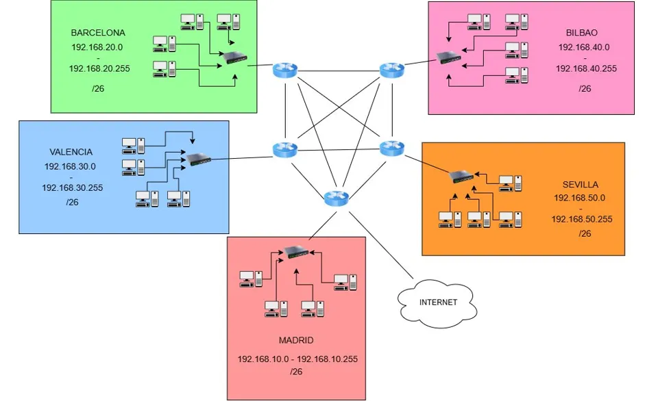

Proyecto destacado · 1º ASIR
Cloudium Labs · Infraestructura multisede
Renovación completa de una empresa de 400 empleados en 5 sedes. En red: VLAN por departamento, OSPF entre sedes, ACL para aislar departamentos y NAT centralizado. En sistemas (mi parte): dominio de Active Directory, GPO de hardening, cuotas con FSRM, permisos NTFS con ABE, DC adicional, monitorización y maquetas con Sysprep.
- Cisco PT
- OSPF
- ACL
- Windows Server
- AD DS
- GPO
- FSRM